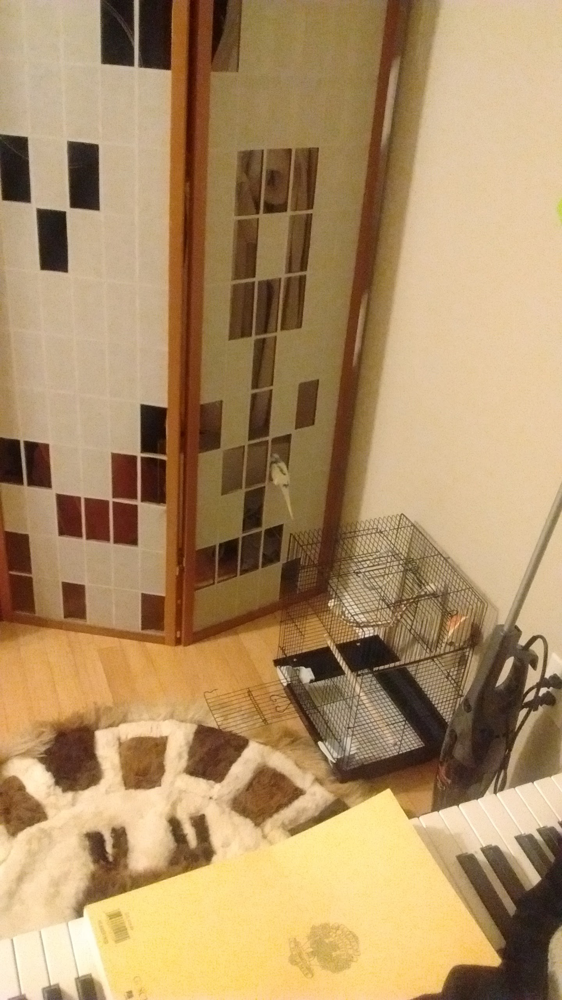
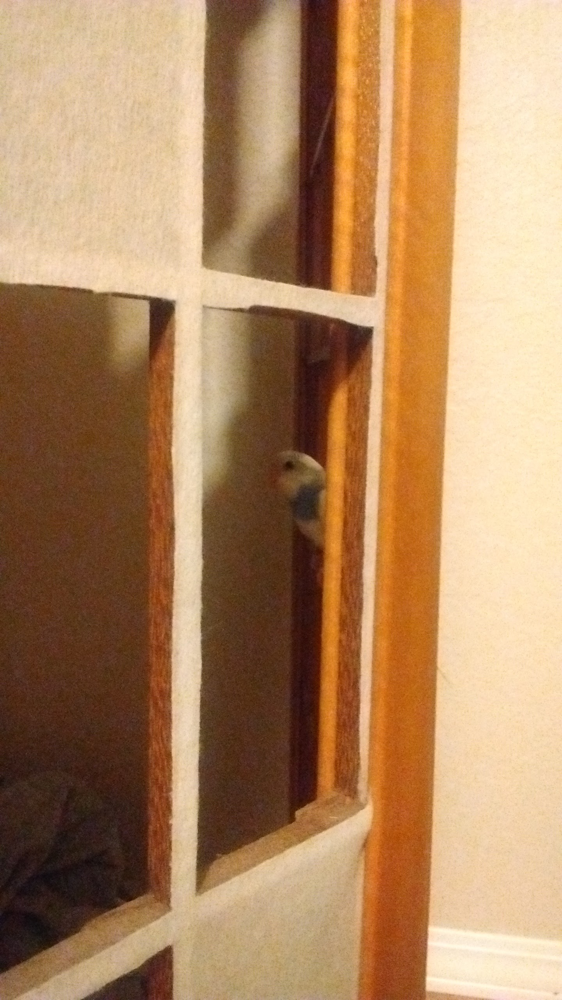
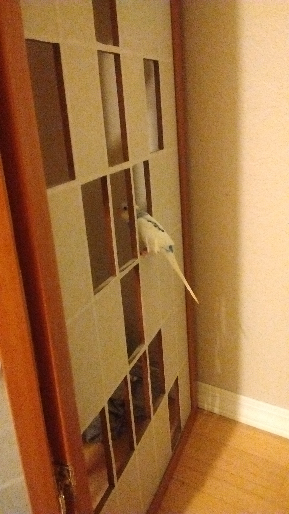
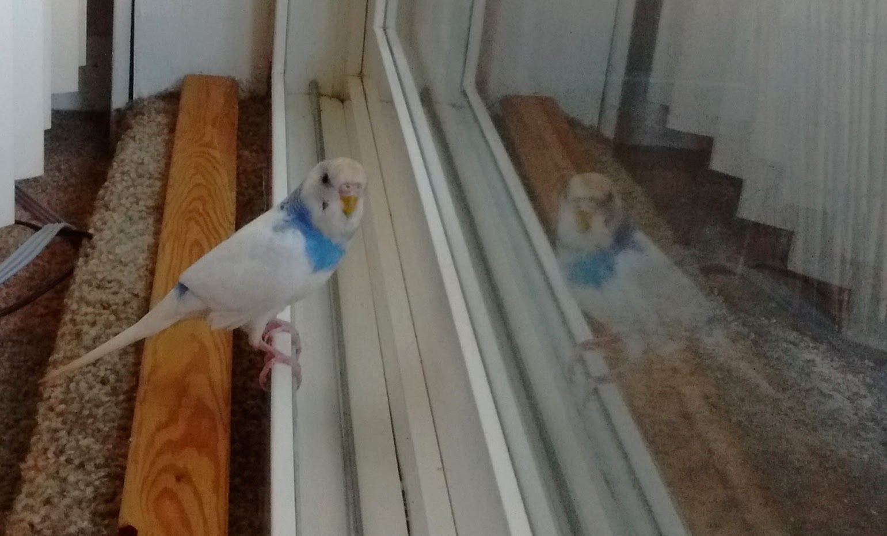

Getting Out of the Cage
After almost two weeks in his little cage I decided it was time to let Apollo out to fly around a bit. I was nervous as hell that he was going to get hurt, but I also didn’t want to let his flying muscles atrophy. He was still not fully tame, but he would “step up” often enough that it seemed he understood the command, though only when he wanted to. But he didn’t mind the presence of my hand at all anymore, and even seemed to enjoy it, so I was hoping we had built enough trust that I’d be able to get him back in the cage when need be.
I had tried getting him out the day before by setting his cage on the floor and making a kind of blanket tent around the living room, so there was nothing he could reach that might get him into trouble. I had no idea how high or how far he would be able to fly with his clipped wings but based on what people in the forums said I thought it was most likely only a few feet. However, being on the floor seemed to distract him too much, and he showed no interest at all in coming out.
The next day I tried a different approach. I covered the kitchen with a sheet (I live in a bachelor apartment, so everything except the bathroom is all in one room) and I covered everything else that could even potentially be dangerous with blankets. Basically I covered everything, which might have been overkill, but I didn’t know what to expect and didn’t want to take any chances that Apollo would get hurt.
With his cage in its normal spot, I tried coaxing him out with food in the palm of my hand. But every time I would get him close to the door he would fly back to his perch. On what was going to be my last attempt I actually got my hand, with him in it, clear of the cage! When he realized he was out he tried to jump on to the outside of the cage but slipped a bit on the vertical bars and decided to fly off towards the kitchen instead. He fluttered to the ground and bounced back and forth across the floor a few times before finding a perch on the screen that somewhat blocks off the back hall.
  
My heart was pounding. I don’t know how he didn’t get hurt, it seemed like he was hitting the floor pretty hard between desperate attempts to gain some altitude. But he looked fine, except that he was frozen. He let me touch him, but he wouldn’t move, wouldn’t take any food, and certainly wouldn’t get onto my finger. So I let him sit there for almost two hours to calm down and get comfortable with his new surroundings.
It started getting late, so I endeavoured to get him home. He was finally unfrozen, but still seemed unwilling to release his clutch on his perch. As I was trying to convince him to get in my hand, he took a leap and flew towards the backdoor instead. I didn’t see where he landed so I slowly stepped back through the hall, looking everywhere on the floor for movement and calling his name. Finally he chirped, and to my surprise it sounded like it was coming from up above. I still couldn’t see him so I took another careful step forward. He chirped again and hopped into view, on top of a pile of clothes on a shelf that’s about six feet off the ground! Before I had a chance to get near him, he took off flying again and flew the entire length of the apartment, all the way to the window, into the blinds, and fluttered down to the floor. Safely. Somehow. He sure proved the Internet wrong on that one - clipped wings or no, he could fly.

He ran around the track for the patio door for a while, which was pretty gross and dirty at that point since I hadn’t anticipated he would go there, but he seemed very interested in the area. After not too long I had to give up on the option of letting him come willingly, and grabbed him to get him back to his cage. He was letting me touch him no problem, he was just refusing to step onto my finger, so with one hand under his belly I put my other hand over his back and created a kind of cage with my hands. Tight enough that he couldn’t spread his wings, or wriggle out, but not so tight that it would have limited his breathing. He struggled a little, and bit me half-heartedly, but then hopped back up on the the perch in his cage without a fuss. To this day that is the only time I’ve had to grab him like that.